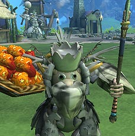
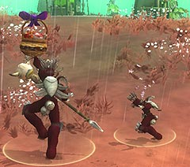

目次 > ゲームについて > シミュレーション攻略 > SPORE > ステージ攻略 > 集落ステージ
| 概要 | 情報 | ステージ攻略 |
| コレクション一覧 | 継承アビリティー一覧 | アチーブメント一覧 |
| SPORE 攻略へ | 目次へ戻る |
| [ 細胞ステージ ] [ クリーチャーステージ ] [ 集落ステージ ] [ 文明ステージ ] [ 宇宙ステージ ] |
| 目的 |
| 自分のいる地域にある集落を壊滅させるか、同盟を組むかして、統一することが目的です。 このステージ以降、クリーチャーに服を着せることができるようになりますが、クリーチャーのパーツを取り替えることができなくなります(クリーチャーの肌の色を変えることはできます)。  |
| 他の集落と仲良くする、同盟を組む |
| 他の集落との関係を向上させるだけならば、贈り物をしたり、継承アビリティーの「花火」を使えばいいです。完全に敵対関係にある集落とも、この方法を使えば関係を改善できます。  しかし同盟を組む(自分たちの集落と同じ宗教にさせる)には、集落の族長と楽器を持った住人が必要となります。 相手の村に着いたら、そこ集落の住人に対してパフォーマンス(楽器演奏)を行います。族長の指揮による演奏が始まったら、相手の村が指示した楽器を鳴らして、社交バーのメーターを右まで移動させてください。 他の集落と同盟を組みたい場合は、その時点で使用できるすべての楽器を持っていく必要があります。それぞれの楽器について2人ずつ用意しておけば、まず確実に相手の集落のクリーチャーから10点(もっともよい結果)をもらえ、同盟を組むことができるはずです。 |
| 他の集落を壊滅させる(占領する) |
| 他の集落を壊滅させるには、その集落の「住み家」を破壊しなければいけません。しかし、「住み家」は耐久力が高く、破壊するのには時間がかります。そのため、あらかじめ壊滅させたい集落の住人を全滅させておくといいです。 (住み家) 住人との戦闘は、総力戦になることが多く、継承アビリティーを効果的に使うなどして効率よく攻めることが大切です。また、「住み家」を壊す兵士、住人と戦う兵士、回復役(ヒーリングロッド)などと役割分担をするといいかもしれません。 (投げ槍) なお、破壊した集落の食料は、あとで回収することができます。 |
| パーツを増やす |
| 集落に建てられる施設を増やしたり、十にが身につけられる服装パーツを増したりするには、他の集落を壊滅させたり、同盟を組んだりする必要があります。 また、パーツが増えると集落中央にあるたき火も徐々に豪華になっていきます。 |
| 収穫・魚捕り、狩猟、ペット |
| 収穫と魚捕りを指示した住人は、指示した周辺で果物(?)が採れなくなる、もしくは魚が捕れなくなるまで収穫と集落への運搬を繰り返します。しかも、おなかが減ると採った食料の一部をつまみ食いするので、放置しても大丈夫です。 (つまみ食い) 狩猟は、武器を持っていなくとも可能ですが、武器を持っていた方が効率よく野生のクリーチャーを狩ることができます。狩りの現場をよく見ると、持っている武器以外にクリーチャーパートで使った攻撃(ストライク、突進など)も使っています。 また、対象のクリーチャーを倒すと、住人は自動的にその肉を集落へ運搬します。そして、すべての肉を運び終えると、自動的に集落の警備へと行動を変えます。そのため、何度も狩猟に行かせたい場合は、ひたすら指示を出さなければなりません。 野生のクリーチャーを飼い慣らすことで、そのクリーチャーをペットにすることができます。しかし、ペットとは言っても、かわいがったり、一緒に遊ぶものではなく、鶏のように卵や肉目当てで飼っているので、家畜と言った方が正しいかもしれません。 ペットは最大3匹までしか飼うことができず、4匹目以降のクリーチャーを飼い慣らしても集落のそばに置くことはできません。しかし、そのクリーチャーとの関係が向上するので、住人が外で襲われることがなくなり、安全性が向上します。しかし、関係がもっとも悪い(赤い怒った顔のマーク)の野生のクリーチャーと、「壮大な○○」という名前のクリーチャーは、絶対に飼い慣らせませんので、注意が必要です。 (自分よりも大きくてもペット) |
| ペットについて |
| ペットは最大3匹飼うことができ、1つの種族につき1匹しか飼えません。ペットを飼い始めると、ペットのいる区域のそばにある箱から卵が手に入り、これは食料として住人に収穫(?)させることができます。 また、ペットは攻撃して殺し、肉を食べることができますが、食べられた種族との関係が悪化するので、注意が必要です。 ちなみに、クリーチャーパートをクリアした時点で、群れの中に自分とは違う種族のクリーチャーがいると、集落ステージの初期段階でペットになっています。 また、ペットにしたクリーチャーは、他の集落からの攻撃で、自分の集落が危険にさらされている場合、一緒に戦ってくれます。 |
| [ 細胞ステージ ] [ クリーチャーステージ ] [ 集落ステージ ] [ 文明ステージ ] [ 宇宙ステージ ] |
| 概要 | 情報 | ステージ攻略 |
| コレクション一覧 | 継承アビリティー一覧 | アチーブメント一覧 |
| ページの上部へ | SPORE 攻略へ | 目次へ戻る |